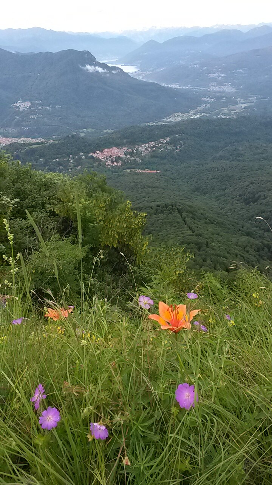

Origini e nome
Il territorio era abitato già in epoca neolitica. Nel V secolo a.C. i Celti Insubri si insediarono nella zona: alcuni toponimi (Duno, Vararo, Gaggio) hanno radici celtiche.
In età romana la valle faceva parte del sistema di collegamenti tra il Verbano e la pianura. Il nome “Valcuvia” deriva dal villaggio di Cuvio, storico capoluogo del feudo e sede di pieve. Un’etimologia popolare lo lega al latino vallis cum via (“valle con via”), perché era un importante passaggio stradale.
Medioevo e feudi
In età longobarda la zona apparteneva al Ducato di Milano; in epoca carolingia al Contado del Seprio. Dopo la battaglia di Legnano (1176) e il trattato di pace del 1196 passò sotto il controllo di Milano.
Nel 1447 venne infeudata ai marchesi Moriggia. Nel 1450 Francesco Sforza la concesse in feudo a Pietro Cotta. Tra il 1513 e il 1515 fu occupata da milizie svizzere di Lucerna, Uri e Nidwalden, che ne rivendicavano il possesso; dopo la sconfitta fu restituita.
Età moderna e contemporanea
Nei secoli successivi la valle rimase legata al Ducato di Milano e poi alle dominazioni spagnola e austriaca. Con l’Unità d’Italia i comuni assunsero spesso la dicitura “Valcuvia” nel nome (es. Cassano Valcuvia, Rancio Valcuvia, Bedero Valcuvia).
All’inizio del Novecento, tra il 1907 e il 1914, fu realizzata la Tramvia della Valcuvia, che collegava Cittiglio a Bosco Valtravaglia. Dopo la Seconda guerra mondiale venne sostituita da linee di autobus.
Durante la Prima Guerra Mondiale nella zona fu costruita parte della Linea Cadorna, il sistema di fortificazioni della Frontiera Nord destinato a proteggere il confine svizzero. A Cassano Valcuvia si trova oggi un centro documentale dedicato a queste strutture e alla battaglia di San Martino.
Oggi
I comuni della Valcuvia fanno parte della Comunità Montana Valli del Verbano. Il territorio è valorizzato per il turismo lento: cicloturismo, trekking, visite a ville e paesi dipinti, e la scoperta del patrimonio naturale del Parco Regionale Campo dei Fiori.